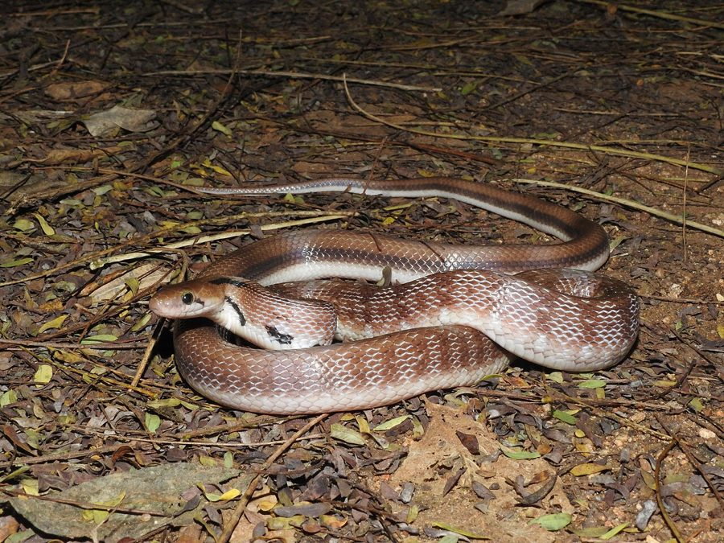

ट्रिंकेट साँपCommon Trinket Snake
Coelognathus helena · Colubridae · REP-0027

- Scientific nameवैज्ञानिक नाम
- Coelognathus helena (Daudin, 1803)
- Familyकुल
- Colubridae
- Hindiहिंदी
- ट्रिंकेट साँप
- Local namesस्थानीय नाम
- trinket snake, common trinket snake, trinket, saamp
- Status hereयहाँ की स्थिति
- native
- Movementआवागमन
- Resident, here all year
- IUCNIUCN
- LC
- Reviewसमीक्षा
- audited and independently read
When to look कब देखें
Expected mainly in March, April, May, June, July, August, September, October, November.मुख्यतः मार्च, अप्रैल, मई, जून, जुलाई, अगस्त, सितंबर, अक्टूबर, नवंबर में अपेक्षित।
Uses and possibilities उपयोग और संभावनाएँ
Drawn from the documented uses in the profile below, where each is labelled traditional, current or a research lead. All uses →
Tell it apart from इनसे अलग पहचानें
ट्रिंकेट साँप / Common Trinket Snake
Coelognathus helena (Daudin, 1803) — Colubridae
ट्रिंकेट साँप — बस्ती के जंगलों, घास के मैदानों और खेतों में रहने वाला एक पतला, तेज़ गतिविधि वाला सांप, जो पूरी तरह विषरहित है। इसका शरीर पीला-भूरा या कभी काला होता है, और इसमें गहरी धारियां या धब्बे हो सकते हैं। इसके नाम 'trinket' का अर्थ छोटा सजावटी वस्तु है, जो इसकी छोटी, सुंदर बनावट को दर्शाता है। यह सांप अपने बहुत ही अलग और विशेष व्यवहार के लिए जाना जाता है: यह अन्य सांपों का शिकार करता है। यह एक तेज़ दौड़ने वाला सांप है, जो दिन के समय सक्रिय होता है और जमीन पर और झाड़ियों में शिकार करता है। यह सांप बहुत ही मज़बूत जबड़े वाला होता है।
Quick Identification त्वरित पहचान
| Feature | Description |
|---|---|
| Form | Slender, moderately long snake; tail tapers to a fine point |
| Length | 90–150 cm total length; moderate to large for its group |
| Coloration | Highly variable: uniform yellowish-brown, striped, or banded; dark forms common |
| Markings | Often dark stripes or bands; sometimes checkered pattern; extremely variable among individuals |
| Scales | Smooth, shiny scales; arranged in 17 rows at midbody |
| Eyes | Moderate-sized, pupils round; good vision adapted for daylight hunting |
| Head | Slightly distinct from neck; snout pointed |
| Behaviour | Diurnal, active, fast-moving; hunts other reptiles; not defensive but bites readily |
Field tip: A slender, active snake with highly variable coloration (brown, striped, or banded), seen moving rapidly through grass or along branches during the day. It often pursues other reptiles. Completely harmless to humans.
हिंदी — कैसे पहचानें:
पतला, तेज़ दौड़ने वाला सांप।
रंग बहुत परिवर्तनशील (पीला, काला, धारीदार)।
दिन के समय सक्रिय।
पूरी तरह हानिरहित।
Morphology आकारिकी
Biometrics:
| Measurement | Range |
|---|---|
| Total length | 900–1500 mm |
| Tail length | 250–400 mm |
| Weight | 300–600 g |
Body shape: Slender and graceful, slightly compressed laterally. The body tapers smoothly to a pointed tail. The head is slightly distinct from the neck; the snout is pointed.
Coloration: Highly variable among individuals and populations. Base colour can be uniform yellowish-brown, reddish-brown, or dark brown to nearly black. Many specimens show dark longitudinal stripes running the length of the body, or dark crossbars. Some are strongly checkered or spotted. Belly (ventral surface) typically pale yellow, cream, or pale brown.
Scales: Small, smooth, shiny scales arranged in 17 rows at midbody. All scales similar in size; no enlarged vertebral scales. The smooth, polished appearance is distinctive.
Dentition: Aglyphous (lacks fangs). Teeth small, slightly backward-curved, uniformly distributed in upper and lower jaws.
Behaviour & Ecology व्यवहार और पारिस्थितिकी
Ophiophagous specialist: The Common Trinket Snake is one of the most unusual snakes of eastern UP: it feeds almost exclusively on other reptiles, particularly other snakes. This ophiophagous (snake-eating) behaviour is its defining characteristic.
Diurnal forager: Active during the day, unlike most other snakes. This diurnal activity pattern allows it to hunt other snakes that are active and visible during daylight.
Rapid predator: Moves quickly through grass and low vegetation, using its keen vision to locate prey. When prey is found, it strikes rapidly and grips the prey snake with its jaws, often subduing the prey by constriction.
Swift movement: Capable of rapid movement through grass, along branches, and across open ground, pursuing prey and escaping larger predators.
Defensive behaviour: When threatened, the snake may hiss and bite repeatedly, though the bite is harmless to humans. It does not exhibit the defensive immobility of many other snakes.
Habitat preference: Equally at home in trees and on the ground; climbs readily to search for prey in branches and roof rafters.
Life Cycle / Phenology जीवन चक्र
| Stage / season | Event |
|---|---|
| December–February | Dormant or sluggish; minimal activity; hidden in shelter |
| March–April | Emergence from dormancy; activity increases; breeding season begins |
| April–June | Mating; males search for females |
| June–July | Egg-laying; females lay clutches of 6–14 elongated eggs in soil, leaf litter, or cavities |
| July–September | Eggs incubate in warm, humid conditions (45–60 days) |
| September–October | Hatchlings emerge; juveniles begin hunting |
| October–November | Continued growth and feeding |
| November–December | Activity declines; preparation for dormancy |
Host Plants or Prey आहार
| Prey Type | Examples | |
|---|---|---|
| Other snakes | [[common_krait\ | Common Krait]], rat snakes, other colubrids |
| Lizards | Skinks, geckos (occasionally) | |
| Small vertebrates | Occasionally nestling birds, small mammals |
हिंदी: मुख्य भोजन: अन्य सांप। कभी-कभी छिपकलियां। विशेष रूप से सांपों का शिकार करता है।
Predators / Natural Enemies शत्रु
- Avian predators: Large eagles, serpent eagles, occasionally shrikes
- Reptilian predators: Larger snakes, monitor lizards
- Mammalian predators: Snakes, mongooses, wild boar
- Parasites: Mites, ticks, intestinal helminths
हिंदी: बाज़ और बड़े सांपों का शिकार। बिज्जू भी इसका शिकार करते हैं।
Agricultural / Human Relevance कृषि प्रासंगिकता
Ecological role: Common Trinket Snakes provide natural pest control by preying on other snakes, including some that might be troublesome to humans. However, because they themselves eat snakes, their presence can create interesting food chains.
Protected status: Protected under the Wildlife (Protection) Act, 1972 (Schedule IV). Killing or capturing is prohibited.
Human interaction: Generally not encountered in human settlements, preferring more open habitats. Rarely bites humans unless provoked.
Ophiophagous ecology: This snake-eating specialization is a unique ecological role; few other snakes in the region have evolved to primarily feed on other snakes.
Expected Locally स्थानीय रूप से अपेक्षित
Not a field record. Written from published accounts for eastern Uttar Pradesh. No confirmed local sighting yet — if you have seen it, that is what the atlas needs.
अभी तक स्थानीय पुष्टि नहीं। यह विवरण प्रकाशित स्रोतों से है, किसी अवलोकन से नहीं।
This species is NOT a field record. The distribution below is based on published sources describing where Common Trinket Snakes should be looked for in eastern Uttar Pradesh.
यह स्थानीय अवलोकन नहीं है। प्रकाशित स्रोतों पर आधारित।
Common Trinket Snakes are expected in grassland, scrubland, and forest edge habitats throughout Basti and Ayodhya districts. Their presence depends on the availability of other snake species (their primary prey). They are diurnal and relatively active, making them more likely to be encountered than nocturnal snakes. A first record should include location, time of day (noting daytime activity), and if possible, documentation of diet (e.g., if a snake is being consumed). Submit through the atlas About page.
Distribution वितरण
Global range: South and Southeast Asia, including Pakistan, India, Sri Lanka, Myanmar, Thailand, and Malaysia.
In India: Distributed throughout the subcontinent in suitable habitats; common in many regions.
In Uttar Pradesh: Widespread resident in grasslands and forest edges; fairly common in appropriate habitats.
In Basti district / eastern UP: Locally present in grassland and scrub habitats; abundance varies with prey availability.
Research Questions शोध प्रश्न
- What is the seasonal activity pattern of Common Trinket Snakes in Basti, and when are they most active?
- What is the composition of their diet — which snake species are the primary prey?
- How does their population fluctuate with the availability of other snake species?
- बस्ती के घास के मैदानों में ट्रिंकेट सांपों की संख्या कितनी है, और क्या उनकी मौजूदगी अन्य सांपों की संख्या से जुड़ी है?
- Can students photograph individuals and document the variation in coloration and pattern?
- What are the predators of this ophiophagous snake, and how do they avoid being eaten by larger snakes?
Similar Species मिलती-जुलती प्रजातियाँ
| Species | How to tell apart | हिंदी | |
|---|---|---|---|
| Rat Snake (Ptyas mucosa) | Larger (1.5–2 m); smoother profile; found in wider range of habitats; ophiophagous but also eats rodents | चूहे का सांप | Rat Snake is much larger. Trinket is smaller, more slender, and more specialized on snakes. |
| Common Krait (Bungarus caeruleus) | Highly venomous; has large hexagonal scales along spine; head not distinct from neck; nocturnal | करैत | Krait is highly venomous with large vertebral scales. Trinket is harmless with smooth, uniform scales. |
Field rule: A slender, diurnal, highly variable-coloured snake moving rapidly through grass or branches, with smooth scales throughout, is a Common Trinket Snake. It is harmless and feeds on other reptiles.
Taxonomy & Classification वर्गीकरण
Original description. The Common Trinket Snake was first described by François-Marie Daudin in 1803. The genus Coelognathus was formerly placed in Elaphe and Oxybelis.
Subspecies. Coelognathus helena helena — the nominate subspecies found in South Asia.
Family and order placement. Order Squamata, family Colubridae, subfamily Colubrinae.
Phylogenetic notes. Coelognathus forms a distinct clade within Asian Colubridae. Molecular studies support the ophiophagous specialization as a unique ecological niche within the group.
IUCN status rationale. Listed as Least Concern (LC) due to wide range and stable populations. No major conservation threats; benefits from habitat retention for snake prey.
Photo Gallery फोटो गैलरी
No photos yet — add field photos to media/species/common_trinket_snake/ and run node scripts/sync_photos.js.
Wanted photos:
- Individual showing full body and coloration
- Close-up of head showing pointed snout
- Individual in typical grassland habitat
- If possible, feeding on another snake
- Juvenile compared to adult
References संदर्भ
- Daudin, F. M. (1803). Histoire Naturelle, Générale et Particulière des Reptiles. Vol. 5.
- Smith, M. A. (1943). The Fauna of British India, Ceylon and Burma: Reptilia and Amphibia. Vol. 3 — Serpentes. Taylor & Francis, London.
- Whitaker, R. & Captain, A. (2004). Snakes of India: The Field Guide. Draco Books, Chennai. Pp. 156–157.
- Wallach, V., Wüster, W. & Broadley, D. G. (2009). In search of the Asiatic wolf snake—resurrection of the genus Coelognathus. Zootaxa 2091: 1–19.
- IUCN Red List (2023). Coelognathus helena — IUCN Reptile Specialist Group assessment. Status: Least Concern.
- GBIF Occurrence Data — Coelognathus helena, South Asia (2026).
Source file: species/fauna/reptiles/common_trinket_snake.md